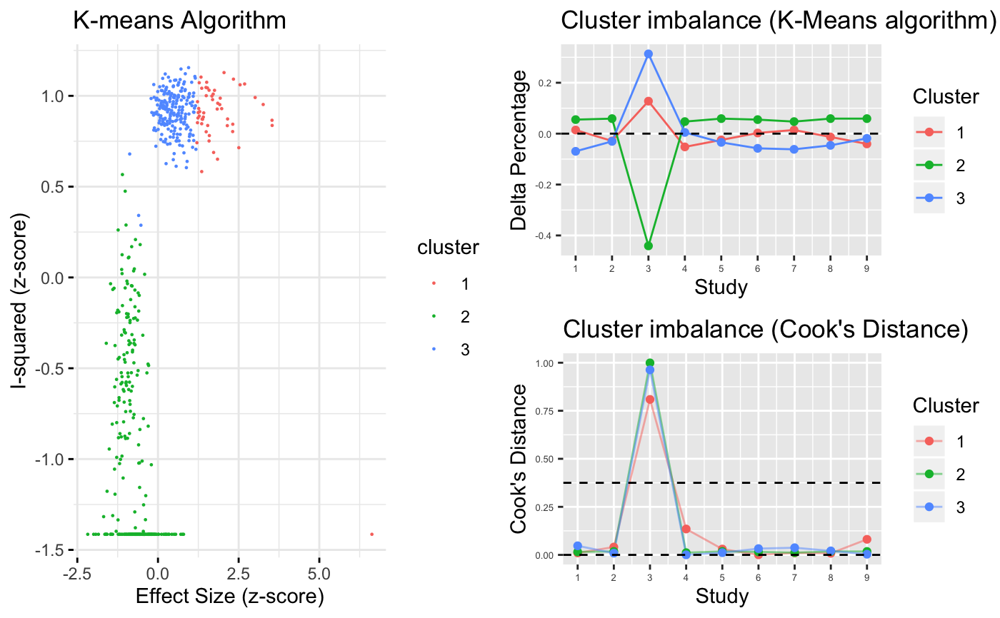
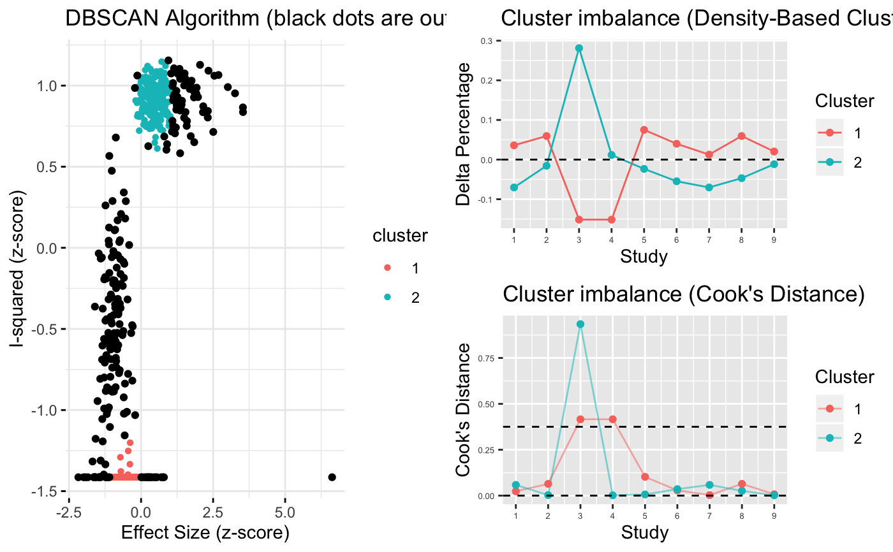
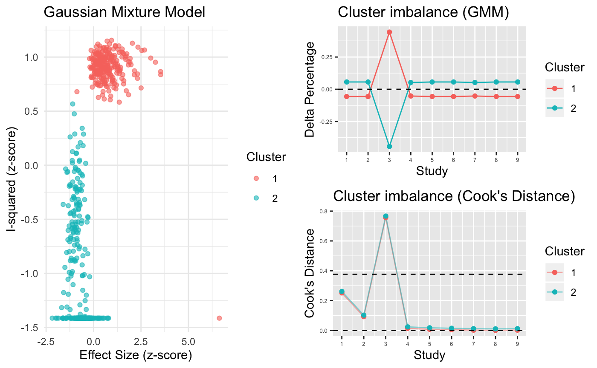
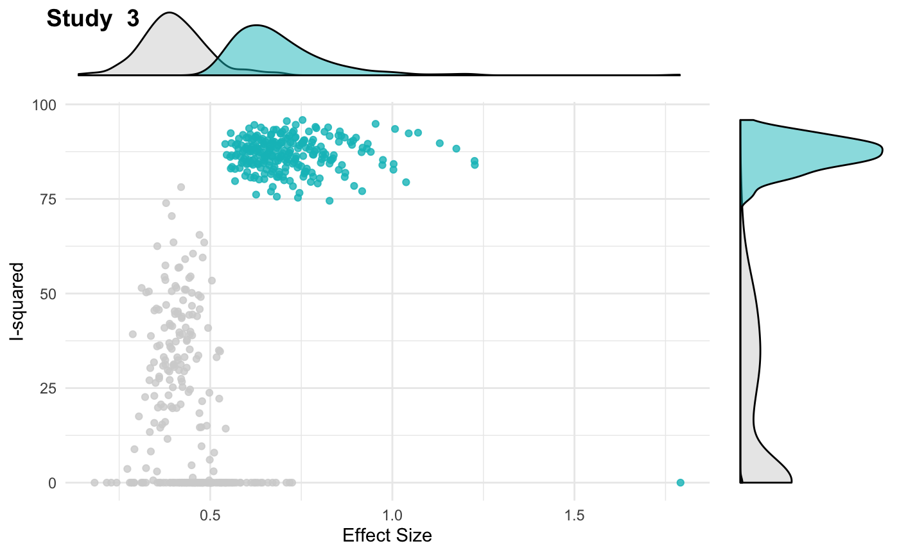
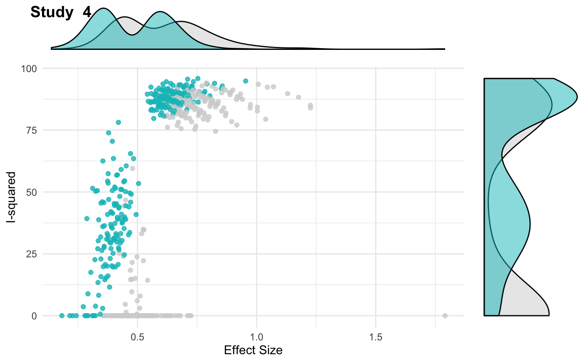

R/gosh.diagnostics.R
gosh.diagnostics.RdThis function uses three unsupervised learning learning algorithms (k-means, DBSCAN and Gaussian Mixture Models) to identify studies contributing to the heterogeneity-effect size patterns found in GOSH (graphic display of study heterogeneity) plots.
gosh.diagnostics(data, km = TRUE, db = TRUE, gmm = TRUE, km.centers = 3, db.eps = 0.15, db.min.pts = 20, gmm.diag = TRUE, gmm.clusters = 2, gmm.tolerance = 1e-16, gmm.itermax = 10000, seed = 123)
| data | An object of class |
|---|---|
| km | Logical. Should the k-Means algorithm be used to identify patterns in the GOSH plot matrix? TRUE by default. |
| db | Logical. Should the DBSCAN algorithm be used to identify patterns in the GOSH plot matrix? TRUE by default. |
| gmm | Logical. Should a bivariate Gaussian Mixture Model be used to identify patterns in the GOSH plot matrix? TRUE by default. |
| km.centers | Number of clusters to assume for the k-Means algorithm. Default is 3. |
| db.eps | The distance radius \(\epsilon\) used to determine clusters (DBSCAN). Default is 0.15. |
| db.min.pts | The mininum number of points \(minPts\) required within \(\epsilon\) used to determine clusters. Default is 20. |
| gmm.diag | Logical. Should the covariance matrix of the components be restricted to diagonal matrices? Default is TRUE. |
| gmm.clusters | Number of clusters to assume for the Gaussian Mixture Model. Default is 2. |
| gmm.tolerance | Relative change threshold of log-likelihood used to stop the Expectation-Maximization algorithm for the Gaussian Mixture Model. Default is 1e-16. |
| gmm.itermax | Maximum number of iterations for the Expectation-Maximization algorithm used in the Gaussian Mixture Model to reach convergence. Default is 10000. |
| seed | Seed used for reproducibility. Default seed is 123. |
GOSH Plots
GOSH (graphic display of study heterogeneity) plots were proposed by Olkin, Dahabreh and Trikalinos (2012) as a diagnostic plot to assess effect size heterogeneity. GOSH plots facilitate the detection of both (i) outliers and (ii) distinct homogeneous subgroups within the modeled data.
Data for the plots is generated by fitting a random-effects-model with the
same specifications as in the meta-analysis to all \(\mathcal{P}(k),
\emptyset \notin \mathcal{P}(k), \forall 2^{k-1} \leq 10^6\) possible
subsets of studies in an analysis. For \(|\mathcal{P}(k)| > 10^6\), 1
million subsets are randomly sampled and used for model fitting when using
the gosh function.
GOSH Plot Diagnostics
Although GOSH plots allow to detect heterogeneity patterns and distinct
subgroups within the data, interpretation which studies contribute to a
certain subgroup or pattern is often difficult or computationally
intensive. To facilitate the detection of studies responsible for specific
patterns within the GOSH plots, this function randomly samples \(10^4\)
data points from the GOSH Plot data (to speed up computation). Of the data
points, only the \(z\)-transformed \(I^2\) and effect size value is
used (as other heterogeneity metrics produced for the GOSH plot data using
the gosh function are linear combinations of
\(I^2\)). To this data, three clustering algorithms are applied.
The first algorithm is k-means clustering using the
algorithm by Hartigan & Wong (1979) and \(m_k = 3\) cluster centers by
default. The functions uses the kmeans implementation
to perform k-Means clustering.
As \(k\)-means does not
perform well in the presence of distinct arbitrary subclusters and noise,
the function also applies DBSCAN (density reachability and
connectivity clustering; Schubert et al., 2017). The hyperparameters
\(\epsilon\) and \(MinPts\) can be tuned for each analysis to maintain
a reasonable amount of granularity while not producing too many
subclusters. The function uses the dbscan implementation
to perform the DBSCAN clustering.
Lastly, as a clustering approach
using a probabilistic model, Gaussian Mixture Models (GMM; Leisch, 2004)
are integrated in the function using an internal call to the
flexmix implementation. The GMM implemented here use
the Expectation-Maximization algorithm for clustering, hyperparameters of
which can be tuned using the gmm.tolerance and gmm.itermax
parameters.
To assess which studies predominantely contribute to a detected cluster, the function calculates the cluster imbalance of a specific study using the difference between (i) the expected share of subsets containing a specific study if the cluster makeup was purely random (viz., representative for the full sample), and the (ii) actual share of subsets containing a specific study within a cluster. Cook's distance for each study is then calculated based on a linear intercept model to determine the leverage of a specific study for each cluster makeup. Studies with a leverage value three times above the mean in any of the generated clusters (for all used clustering algorithms) are returned as potentially influential cases and the GOSH plot is redrawn highlighting these specific studies.
Leisch, F. (2004). Flexmix: A general framework for finite mixture models and latent glass regression in R.
Hartigan, J. A., & Wong, M. A. (1979). Algorithm as 136: A K-Means Clustering Algorithm. Journal of the Royal Statistical Society. Series C (Applied Statistics), 28 (1). 100–108.
Olkin, I., Dahabreh, I. J., Trikalinos, T. A. (2012). GOSH–a Graphical Display of Study Heterogeneity. Research Synthesis Methods 3, (3). 214–23.
Schubert, E., Sander, J., Ester, M., Kriegel, H. P. & Xu, X. (2017). DBSCAN Revisited, Revisited: Why and How You Should (Still) Use DBSCAN. ACM Transactions on Database Systems (TODS) 42, (3). ACM: 19.
# Example: load gosh data (created with metafor's 'gosh' function), # then use function data("m.gosh") gosh.diagnostics(m.gosh)#> #> Perform Clustering... #> [==============================================================================================] DONE#> #> Number of k-means clusters used: 3#> #> Number of DBSCAN clusters detected: 2#> #> Number of GMM clusters detected: 2 #> #> Identification of potential outliers #> ---------------------------------#> #> Studies identified as potential outliers: #> #> - K-means: 3 1 #> #> - DBSCAN: 1 3 #> #> - Gaussian Mixture Model: 3